平常总会遇到向虚拟机传文件的问题，而且这个问题困扰了我许久，所以这里介绍两种从主机向虚拟机传文件的方式
一.通过U盘传递
打开虚拟机设置—USB控制器—USB的兼容性调成3.1
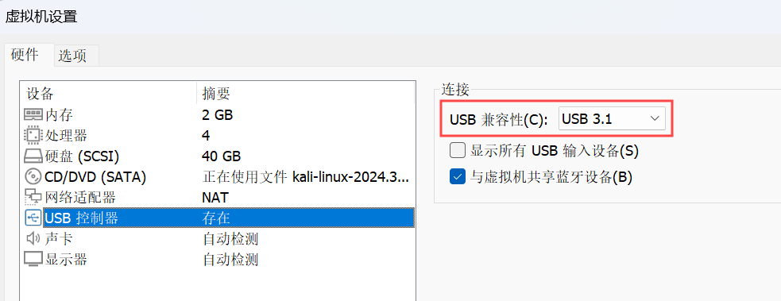
二.共享文件夹传输
（这种方式目前只适用于主机向win虚拟机传文件，linux如kali和ubuntu好像不可以）
我们在桌面新建一个文件夹，最好重命名成英文或者数字的名称，我这里命名为“fix”。接下来，右键文件夹-属性-共享-高级共享-勾选“共享此文件夹”。
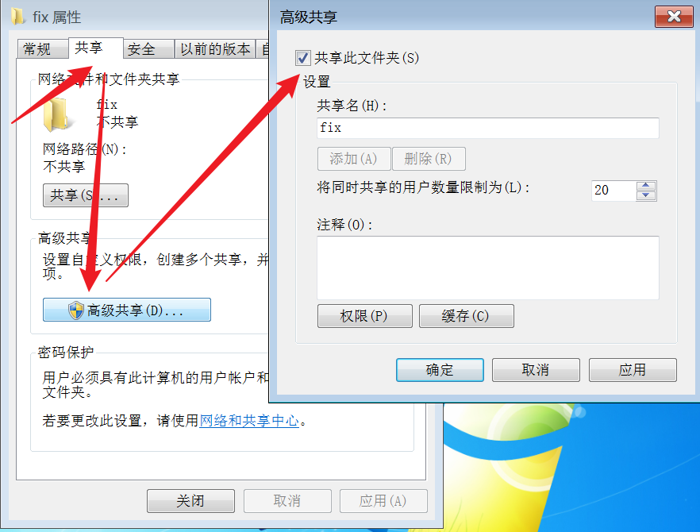
点击，权限-勾选允许完全控制-应用-确定-应用-确定-确定。
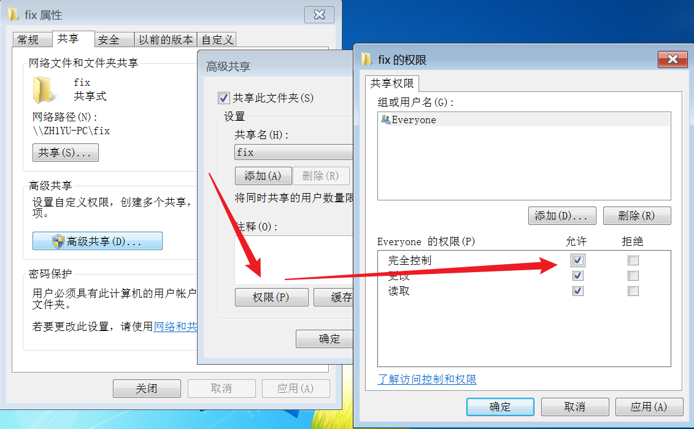
在虚拟机cmd里查看ip地址:
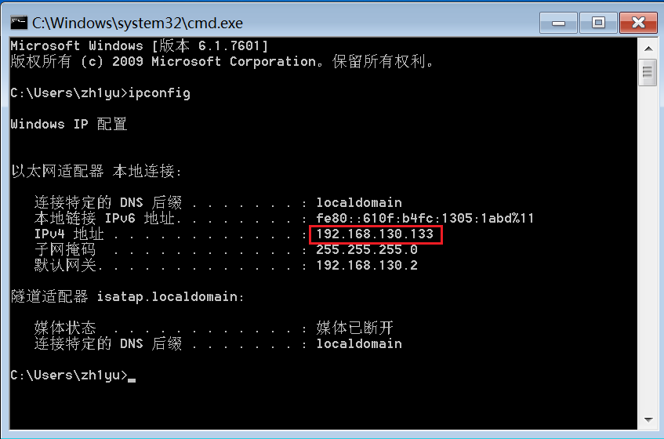
我这里是192.168.130.133（因为存在NAT地址转换，所有主机是可以和虚拟机通信的）
接下来在物理机上的“此电脑”上，点击“添加一个网络位置”，win11在这个位置：
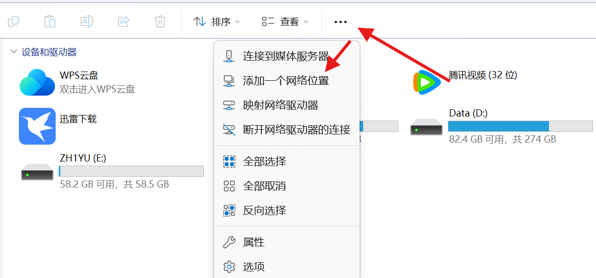
然后，输入“\\192.168.130.133\fix”，也就是虚拟机IPv4地址加我们在虚拟机新建的文件夹名称。
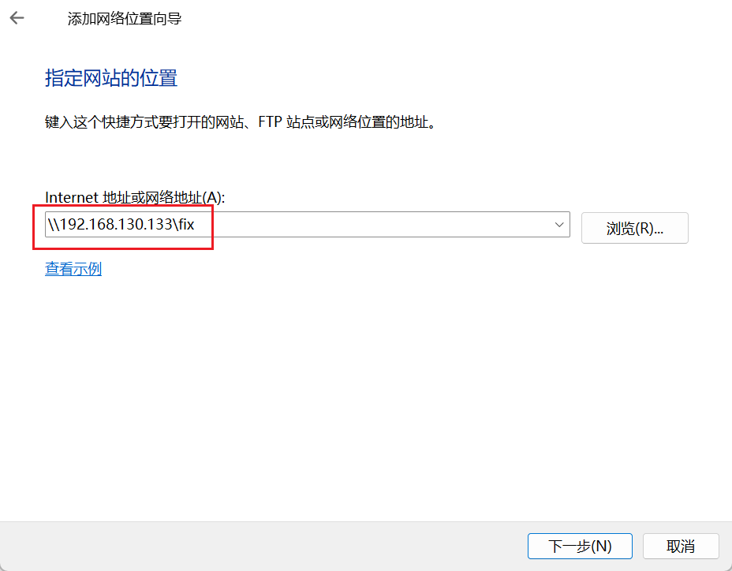
接下来就是输入你在虚拟机里登录的账号密码：
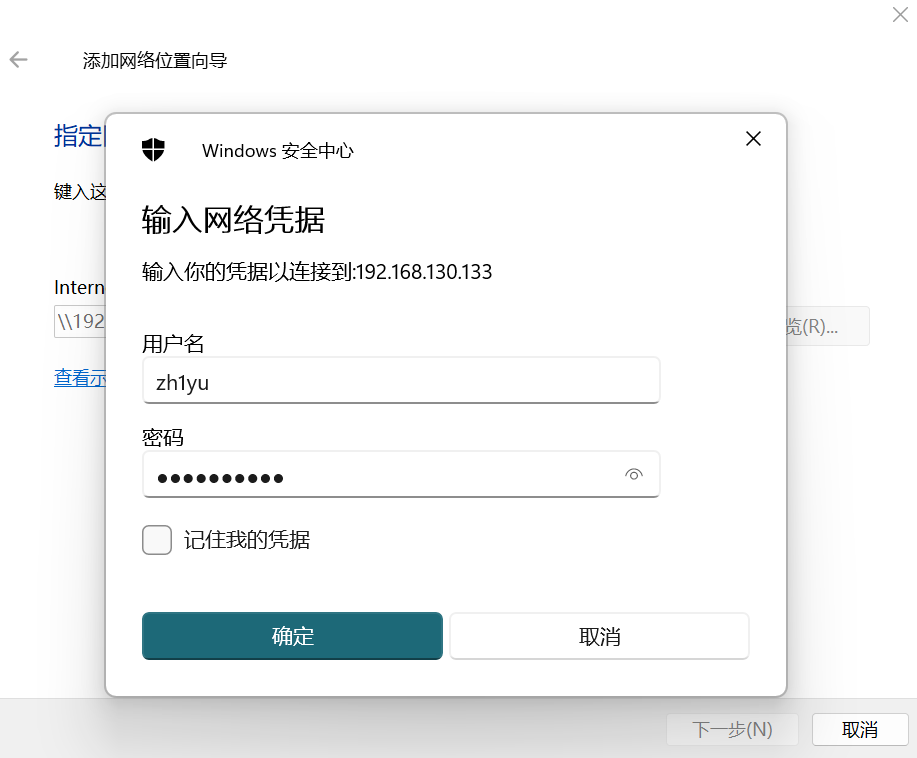
这样就大功告成了。
三.共享文件夹传输
环境如下：
主机win11，虚拟机win xp
配置过程：
1.先在主机中创建一个文件夹-右键属性-共享-高级共享
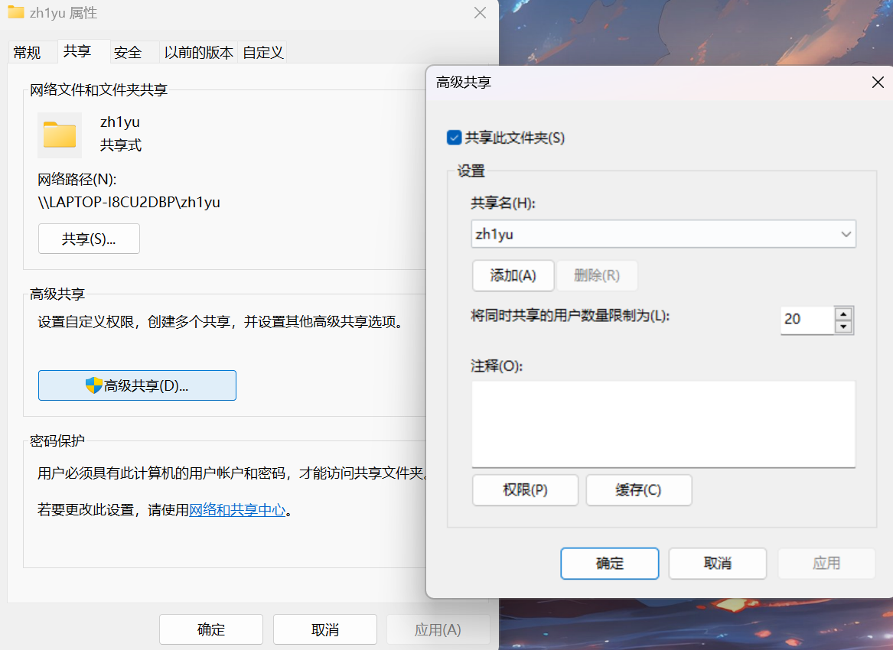
2.进入虚拟机的设置-选项-共享文件夹-右侧添加-设置文件夹的路径
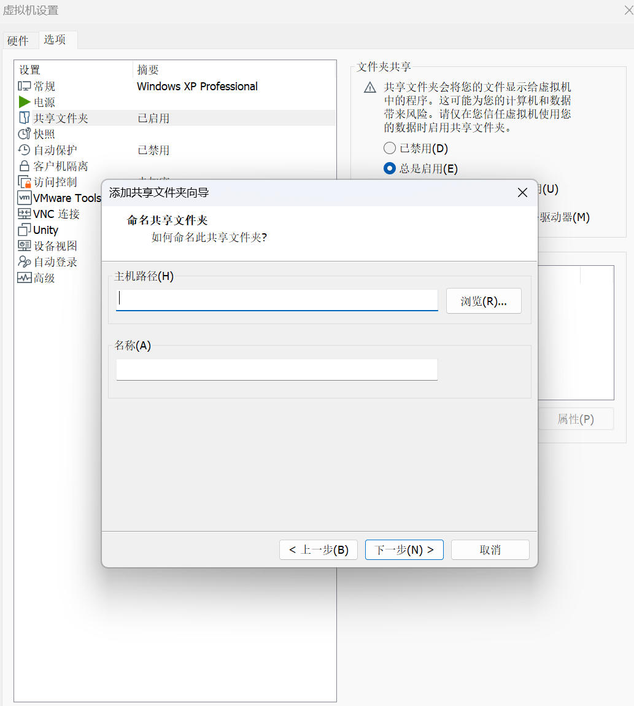
3.进入虚拟机查看
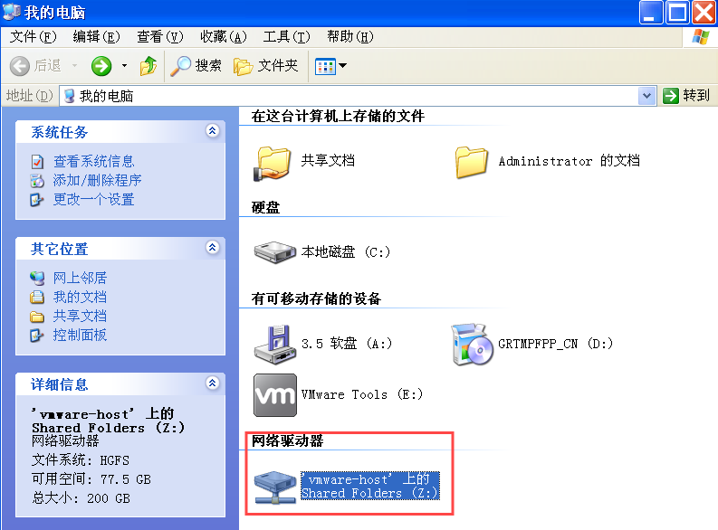
网络虚拟器里面即有我们共享的文件夹
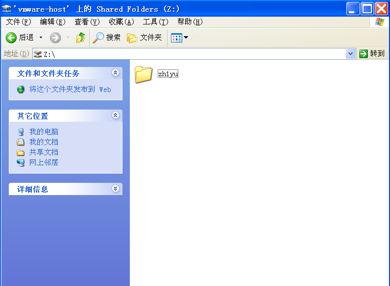
(注：以上传输方式可能因虚拟机中不同的操作系统而导致失败)